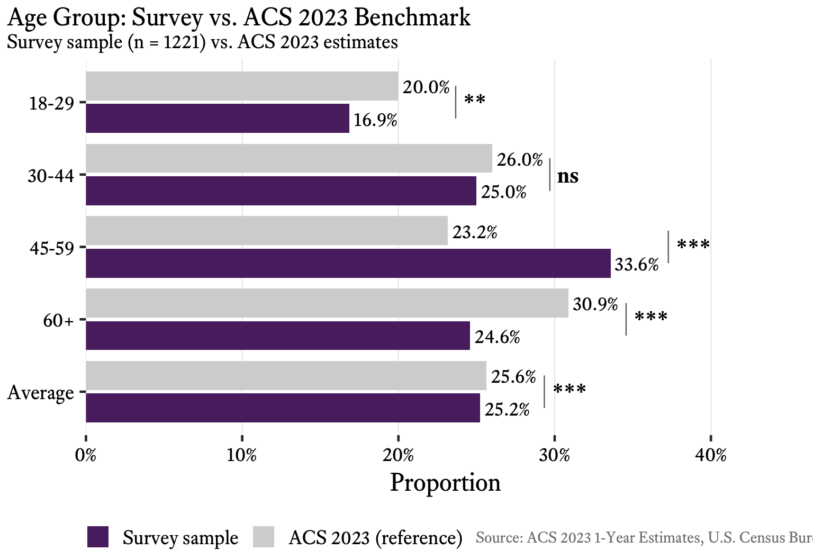
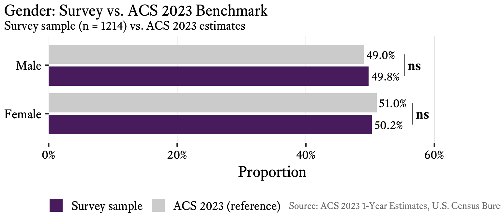
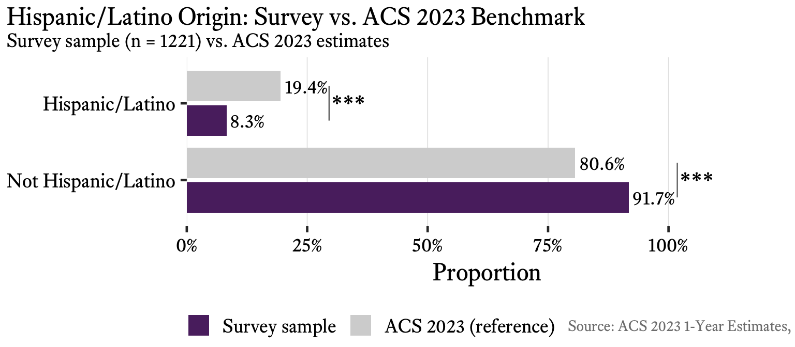
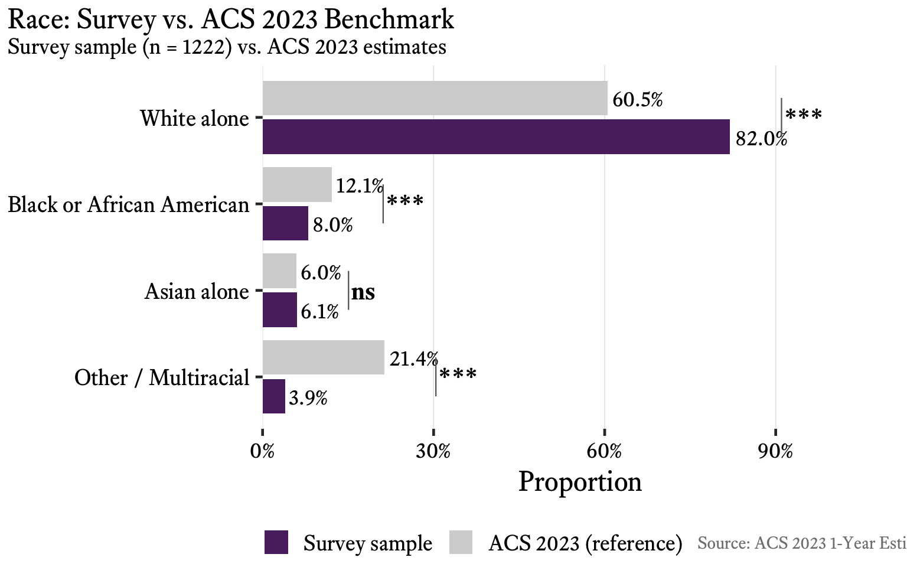
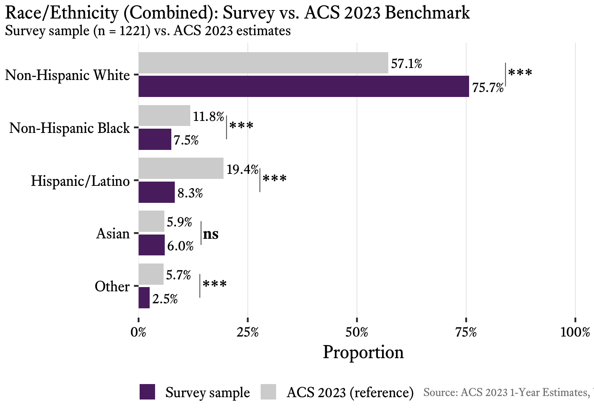
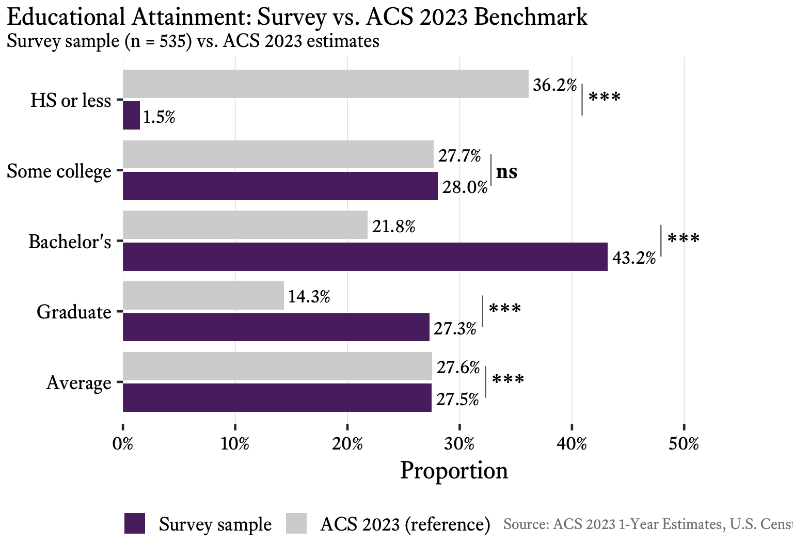
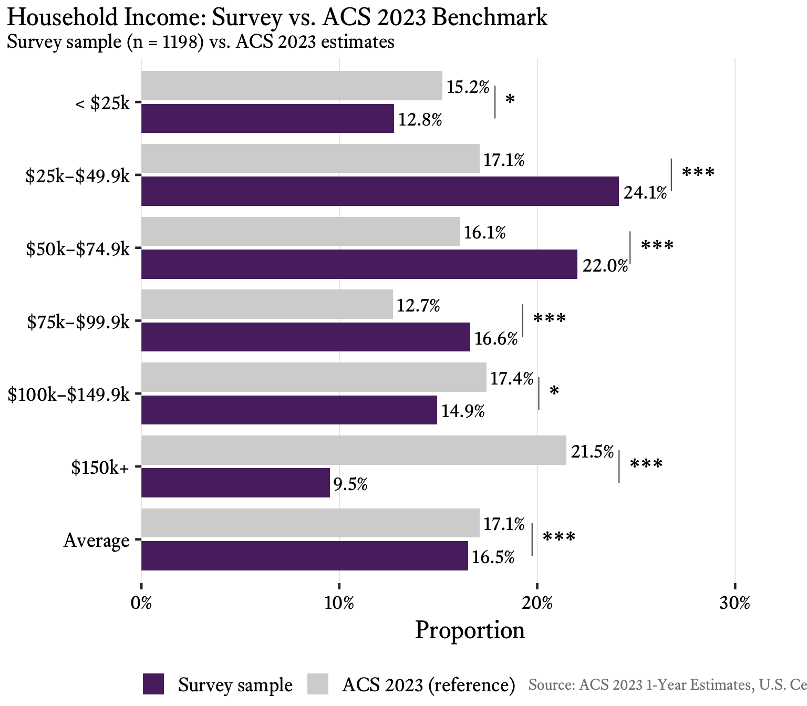
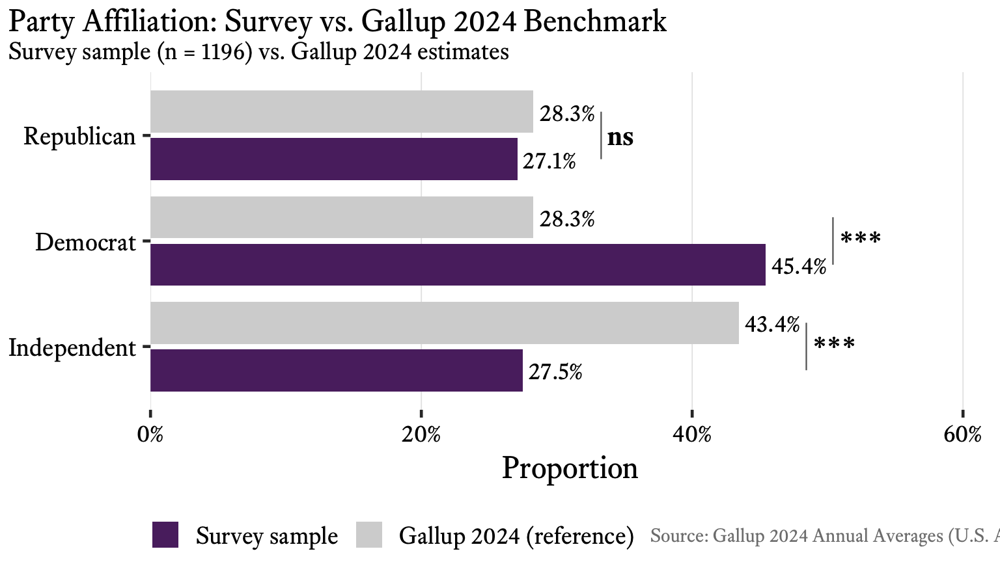
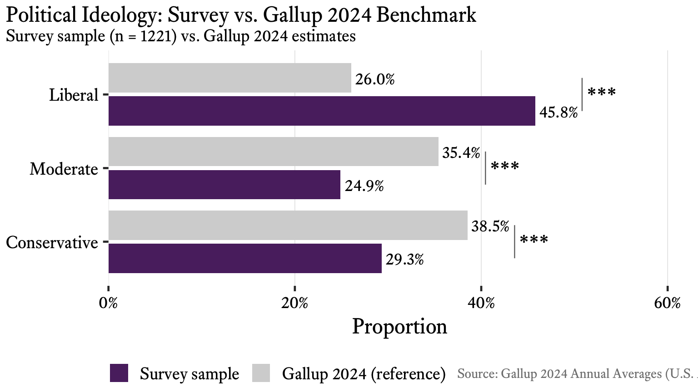

Benchmarks loaded for variables: AGE, EDU, GENDER, HISPLAT, INCOME, LIBCON, POLPARTY, RACE_ETH, RACE_ONLY Total benchmark rows: 33 This Chapter compares the survey sample demographics against population benchmarks to assess external validity: How does the sample resemble the American adult population? The analysis covers five demographic characteristics — age, gender, race/ethnicity, education, and income — benchmarked against the American Community Survey (ACS), plus two political orientation measures — party affiliation and ideology — benchmarked against Gallup’s 2024 annual tracking poll. Full source details for both benchmarks appear below.
Study design note: The survey used a CloudResearch Connect1 panel. This service provides a quota-sampled convenience panel, not a probability sample. Like most online survey experiments, the study prioritizes internal validity (clean randomization between treatment groups) over representational sampling. The ACS comparison documents where the sample diverges from the general population, enabling readers to assess how findings might or might not generalize. In sum, CloudResearch’s “nationally representative” designation is a marketing term that does not reflect probability sampling or representativeness in the statistical sense.
Divergences in this chapter fall into three categories: (1) quota-controlled demographic variables (age, gender, race, and Hispanic/Latino origin), where the sample follows CloudResearch Connect’s standard preset quotas, which depart from ACS proportions; (2) uncontrolled demographic variables (education and income), where no quota was set and the distribution reflects the organic composition of opt-in online survey participants; and (3) political orientation variables (party affiliation and ideology), benchmarked against Gallup’s 2024 annual tracking poll rather than the ACS, which does not collect political data.
Randomization balance (internal validity) is confirmed separately in Chapter 4. The analysis here uses Groups A, B, and C (n = 1,222).
1 Rachel Hartman, Aaron J. Moss, Shalom N. Jaffe, Cheskie Rosenzweig, Leib Litman & Jonathan Robinson, Introducing Connect by CloudResearch: Advancing Online Participant Recruitment in the Digital Age (2023), https://doi.org/10.31234/osf.io/ksgyr; CloudResearch, Connect for Researchers, https://www.cloudresearch.com/products/connect-for-researchers/.
Reference populations: Demographics (§§5.1–5.5): ACS 2023 1-year estimates, U.S. civilian non-institutionalized population. Source tables: B01001 (sex by age), B03002 (Hispanic/Latino origin by race), B15003 (educational attainment, 25+), B19001 (household income). Data retrieved from data.gov via the tidycensus R package. See data/population/acs-source-notes.md for complete retrieval details and cell-level recoding decisions. Political orientation (§5.6): Gallup 2024 annual averages, based on telephone surveys of more than 14,000 U.S. adults conducted throughout 2024.
Benchmarks loaded for variables: AGE, EDU, GENDER, HISPLAT, INCOME, LIBCON, POLPARTY, RACE_ETH, RACE_ONLY Total benchmark rows: 33 
| Age Group | Survey | ACS | Difference |
|---|---|---|---|
| 18-29 | 16.9% | 20.0% | − 3.1%** |
| 30-44 | 25.0% | 26.0% | − 1.0% |
| 45-59 | 33.6% | 23.2% | +10.4%*** |
| 60+ | 24.6% | 30.9% | − 6.3%*** |
| Wt. Average | 25.2% | 25.6% | − 0.4%*** |
Age interpretation: χ²(3) = 79.44, p < .001, Cohen’s h = 0.119. Despite the highly significant test statistic (driven by n = 1,222), the effect size is small (h < 0.20). The observed age distribution closely tracks CloudResearch Connect’s preset quota targets (18–29: 16.7% preset / 16.9% observed; 30–44: 25.0% / 25.0%; 45–59: 33.3% / 33.6%; 60+: 25.0% / 24.6%) rather than the ACS. The divergence from Census proportions, such as the overrepresentation of 45–59 respondents (33.6% vs. 23.2% ACS) and underrepresentation of 60+ adults (24.6% vs. 30.9% ACS), is therefore an artifact of the CloudResearch preset, not sampling error or panel self-selection.
Measurement note: ACS reports binary sex (male/female). The survey offered a third response option for respondents who identified outside the male/female binary or preferred not to answer. Those respondents are excluded from the ACS comparison below; the two-category comparison uses only male/female responses.

| Gender | Survey | ACS | Difference |
|---|---|---|---|
| Female | 50.2% | 51.0% | − 0.8% |
| Male | 49.8% | 49.0% | + 0.8% |
The survey asked Hispanic/Latino origin and race as separate questions, consistent with the Census Bureau approach. This section presents three complementary comparisons: (1) Hispanic/Latino origin alone, (2) racial identification alone, and (3) a combined race/ethnicity classification.

| Category | Survey | ACS | Difference |
|---|---|---|---|
| Hispanic/Latino | 8.3% | 19.4% | −11.2%*** |
| Not Hispanic/Latino | 91.7% | 80.6% | +11.2%*** |
Quota note: The CloudResearch Connect standard panel preset, not the nationally representative ACS, set the Hispanic/Latino target at 8.3% (99.6 of 1,200 participants), compared to the ACS 2023 1-year estimate of approximately 19.4% for the U.S. adult population. CloudResearch’s preset applies equal 8.3% allocations across three non-White racial/ethnic groups (Black, Hispanic/Latino, and Other), with the remaining 83.3% allocated to White participants. This simplified stratification departs substantially from current Census proportions. The Author followed this preset without modification to facilitate cross-study comparability with other Connect panels, a design decision documented in the pre-registration (OSF: https://osf.io/snxyt/). This represents a deliberate methodological choice and a tradeoff of inexpensive survey participant pools against external validity, not a sampling error. The lack of representative racial and ethnic diversity is a well-known limitation of opt-in online survey platforms generally, which tend to underrepresent minorities and over-represent White respondents.2
2 See Courtney Kennedy, Andrew Mercer, Nick Hatley, and Scott Keeter, Evaluating Online Nonprobability Surveys, Pew Research Center (2016); Taylor C. Boas, Dino P. Chirsttenson, and David M. Glick, Recruiting Subjects to Survey Researchers: A Comparison of MTurk, Luc.id, and SurveyMonkey, 8 Pol. Sci. Res. & Methods 422, 427 (2020) (finding that MTurk-based samples significantly over-represent White respondents compared to Census benchmarks).
Race is reported independently of Hispanic/Latino origin, using the survey’s race selection question. For ACS comparison, the race-alone table (B02001) is used. Multi-selection responses and categories other than White, Black, and Asian are collapsed into “Other / Multiracial.”

| Race | Survey | ACS | Difference |
|---|---|---|---|
| Asian alone | 6.1% | 6.0% | + 0.1% |
| Black or African American | 8.0% | 12.1% | − 4.1%*** |
| Other / Multiracial | 3.9% | 21.4% | −17.4%*** |
| White alone | 82.0% | 60.5% | +21.5%*** |
Quota note: The White overrepresentation (82.0% vs. 60.5% ACS) directly reflects CloudResearch Connect’s 83.3% White preset quota. The preset allocates the remaining 16.7% equally across three non-White groups (8.3% each for Black, Hispanic/Latino, and Other), without distinguishing Asian as a separate category — which explains why the Asian alone estimate (6.1% vs. 6.0% ACS) achieves near-exact alignment despite no explicit Asian quota: Asian respondents were absorbed into the residual “Other” pool alongside AIAN, NHPI, and multiracial respondents, whose collective underrepresentation drives the large “Other / Multiracial” gap (3.9% vs. 21.4% ACS). See the pre-registration (OSF: https://osf.io/snxyt/) for the quota rationale.
The combined classification uses the B03002 table (Hispanic/Latino origin by race) to construct mutually exclusive categories: Hispanic/Latino respondents are classified under that category regardless of racial identification; non-Hispanic respondents are classified by race.

| Race/Ethnicity | Survey | ACS | Difference |
|---|---|---|---|
| Asian | 6.0% | 5.9% | + 0.1% |
| Hispanic/Latino | 8.3% | 19.4% | −11.2%*** |
| Non-Hispanic Black | 7.5% | 11.8% | − 4.3%*** |
| Non-Hispanic White | 75.7% | 57.1% | +18.5%*** |
| Other | 2.5% | 5.7% | − 3.2%*** |
Measurement note: The ACS educational attainment table (B15003) covers the population aged 25 and older, while the survey targets adults 18 and older. The ACS proportions used here may over-represent higher education levels relative to the full 18+ population, since adults aged 18–24 are more likely to have not yet completed post-secondary education. No quota was set on educational attainment; the observed distribution reflects the organic composition of the CloudResearch Connect panel.
The heavy overrepresentation of college-educated respondents (70.5% Bachelor’s or higher vs. 35.7% ACS 25+) is a well-documented characteristic of opt-in online survey platforms generally.3
3 See Courtney Kennedy, Andrew Mercer, Nick Hatley, and Scott Keeter, Evaluating Online Nonprobability Surveys, Pew Research Center (2016); Taylor C. Boas, Dino P. Chirsttenson, and David M. Glick, Recruiting Subjects to Survey Researchers: A Comparison of MTurk, Luc.id, and SurveyMonkey, 8 Pol. Sci. Res. & Methods 422, 427 (2020) (finding that MTurk-based samples are significantly more educated than Census benchmarks).

| Education Level | Survey | ACS | Difference |
|---|---|---|---|
| Bachelor’s | 43.2% | 21.8% | +21.4%*** |
| Graduate | 27.3% | 14.3% | +12.9%*** |
| HS or less | 1.5% | 36.2% | −34.7%*** |
| Some college | 28.0% | 27.7% | + 0.4% |
| Wt. Average | 21.6% | 27.6% | − 5.9%*** |
Sampling Note: No quota was set on household income; the observed distribution reflects the organic composition of the CloudResearch Connect panel. The concentration in the $25k–$99.9k range and underrepresentation of the highest earners ($150k+: 9.5% vs. 21.5% ACS) likely reflects participation patterns in paid online surveys, where high-income individuals have lower rates of panel enrollment and survey completion. The ACS income benchmark uses household-level estimates (B19001), consistent with the survey’s household income question.

| Income Bracket | Survey | ACS | Difference |
|---|---|---|---|
| < $25k | 12.8% | 15.2% | − 2.4%* |
| $100k–$149.9k | 14.9% | 17.4% | − 2.5%* |
| $150k+ | 9.5% | 21.5% | −12.0%*** |
| $25k–$49.9k | 24.1% | 17.1% | + 7.0%*** |
| $50k–$74.9k | 22.0% | 16.1% | + 5.9%*** |
| $75k–$99.9k | 16.6% | 12.7% | + 3.9%*** |
| Wt. Average | 16.4% | 17.1% | − 0.7%*** |
Political orientation is examined through two measures: party affiliation (POLPARTY) and political ideology on a liberal–conservative spectrum (LIBCON). Because the Census Bureau does not collect political data, this section uses Gallup’s annual tracking poll as the population benchmark rather than the ACS.
Benchmark source note: The American Community Survey does not include questions about political orientation. The benchmarks here are drawn from Gallup’s 2024 annual tracking poll, which surveys more than 14,000 U.S. adults by telephone throughout the year.4 The survey’s three-category party split (Republican, Democrat, Independent — excluding “Other” and “Prefer not to say”) maps directly to Gallup’s initial party identification question. For ideology, the survey’s five-point LIBCON scale (Very Liberal through Very Conservative) is collapsed to three categories (Liberal, Moderate, Conservative) to match Gallup’s published annual breakdown. Because the benchmark source differs from the ACS used in preceding sections, chi-square results and effect sizes for political variables should not be directly compared to the demographic variables above.
4 Gallup, GOP Holds Edge in Party Affiliation for Third Straight Year (Jan. 16, 2025); Gallup, U.S. Political Parties Historically Polarized Ideologically (Jan. 24, 2025). Data available at https://news.gallup.com/poll/15370/party-affiliation.aspx.

| Party | Survey | Gallup | Difference |
|---|---|---|---|
| Democrat | 45.4% | 28.3% | +17.1%*** |
| Independent | 27.5% | 43.4% | −15.9%*** |
| Republican | 27.1% | 28.3% | − 1.2% |
Party affiliation interpretation: χ²(2) = 194.36, p < .001, Cohen’s h = 0.240. The survey sample’s partisan composition is compared against Gallup’s 2024 annual averages (28% Republican, 28% Democrat, 43% Independent). Respondents who selected “Other” or “Prefer not to say” are excluded from this comparison. The direction and magnitude of any divergence reflects the organic composition of the CloudResearch Connect panel, as no quota was set on party affiliation. Online survey panels are known to skew somewhat more Democratic/liberal than the general population, though the extent varies by platform.5
5 See Adam J. Berinsky, Gregory A. Huber & Gabriel S. Lenz, Evaluating Online Labor Markets for Experimental Research: Amazon.com’s Mechanical Turk, 20 Pol. Analysis 351, 363 (2012); Kevin J. Mullinix, Thomas J. Leeper, James N. Druckman & Jeremy Freese, The Generalizability of Survey Experiments, 2 J. Experimental Pol. Sci. 109 (2015).
Measurement note: The survey’s five-point LIBCON scale (Very Liberal, Somewhat Liberal, Moderate, Somewhat Conservative, Very Conservative) is collapsed to three categories to match Gallup’s published annual breakdown: Liberal (Very Liberal + Somewhat Liberal), Moderate, and Conservative (Somewhat Conservative + Very Conservative). No quota was set on political ideology.

| Ideology | Survey | Gallup | Difference |
|---|---|---|---|
| Conservative | 29.3% | 38.5% | − 9.2%*** |
| Liberal | 45.8% | 26.0% | +19.7%*** |
| Moderate | 24.9% | 35.4% | −10.5%*** |
Ideology interpretation: χ²(2) = 247.80, p < .001, Cohen’s h = 0.280. The survey sample’s ideological distribution is compared against Gallup’s 2024 annual averages (37% Conservative, 34% Moderate, 25% Liberal; renormalized to three-category proportions after excluding “Don’t know” responses). The observed divergence is consistent with the well-documented liberal skew of opt-in online survey panels, particularly among younger and more-educated participants — both of which characterize this sample (see §5.4, Education). As with party affiliation, the study’s primary claims rest on internal validity (randomized treatment comparisons) rather than ideological representativeness.
| Variable | N | χ² | df | p | Cohen’s h | Effect Size | |
|---|---|---|---|---|---|---|---|
| X-squared | Age | 1221 | 79.44 | 3 | < .001 | 0.119 | Small |
| X-squared1 | Gender (binary) | 1214 | 0.28 | 1 | 0.597 | 0.015 | Small |
| X-squared2 | Hispanic/Latino Origin | 1221 | 97.38 | 1 | < .001 | 0.330 | Medium |
| X-squared3 | Race (B02001) | 1222 | 284.31 | 3 | < .001 | 0.296 | Medium |
| X-squared4 | Race/Ethnicity (Combined) | 1221 | 192.26 | 4 | < .001 | 0.207 | Medium |
| X-squared5 | Education | 535 | 352.19 | 3 | < .001 | 0.459 | Medium |
| X-squared6 | Income | 1198 | 164.19 | 5 | < .001 | 0.152 | Small |
| X-squared7 | Party Affiliation | 1196 | 194.36 | 2 | < .001 | 0.240 | Medium |
| X-squared8 | Ideology (Lib-Con) | 1221 | 247.80 | 2 | < .001 | 0.280 | Medium |
Summary interpretation: Divergences from population benchmarks fall into three structurally distinct categories.
Quota-controlled variables (age, gender, race, Hispanic/Latino origin): divergences from the ACS reflect CloudResearch Connect’s standard panel preset, not sampling error. Gender is essentially aligned (h = 0.015) because the preset targets 50% female — nearly identical to the ACS. Age diverges modestly (h = 0.119, small) because the preset allocates 33.3% to the 45–59 cohort (vs. 23.2% ACS), producing the observed overrepresentation of that group; the observed age distribution tracks the preset quotas within 0.4 percentage points across all four bins. Race and Hispanic/Latino origin show medium divergences (HISPLAT h = 0.330; RACE_ETH h = 0.207; RACE_ONLY h = 0.296) that follow directly from the preset’s symmetric 83.3% White / 8.3% Black / 8.3% Hispanic / 8.3% Other structure — a heuristic that departs substantially from current Census proportions. These racial/ethnic divergences are documented in the pre-registration as a deliberate choice to follow CloudResearch’s standard preset for cross-study comparability (OSF: https://osf.io/snxyt/).
Uncontrolled demographic variables (education and income): no quotas were set; distributions reflect the organic composition of the Connect panel. Education shows the largest divergence overall (h = 0.459, approaching large): the sample is heavily college-educated (70.5% Bachelor’s or higher vs. 35.7% ACS 25+), with HS-or-less respondents nearly absent (1.5% vs. 36.2%) — a well-documented characteristic of opt-in online survey panels. Note also that the ACS education benchmark covers adults 25+, while the survey targets 18+, modestly amplifying the apparent gap. Income diverges modestly (h = 0.152, small), with the sample concentrated in the $25k–$99.9k range and high earners underrepresented ($150k+: 9.5% vs. 21.5% ACS), consistent with lower participation rates among high-income individuals in paid online surveys.
Political orientation variables (party affiliation and ideology): benchmarked against Gallup 2024 annual averages rather than ACS (which does not collect political data). No quotas were set on political orientation. Online opt-in panels typically skew liberal and Democratic relative to the general adult population, a well-documented feature of these platforms driven in part by the educational and age composition of panel participants. The political comparisons use a different source population and methodology (Gallup telephone survey vs. ACS census survey) than the demographic variables, so direct effect-size comparisons across the two benchmark sources should be interpreted with appropriate caution.
The study’s primary claims rest on internal validity — clean randomization between treatment groups (confirmed in Chapter 4) — rather than representational sampling. These comparisons enable readers to assess which subpopulations are and are not well-represented and to calibrate the external generalizability of the findings accordingly.
The population benchmark data in data/population/acs-benchmarks.csv is committed to the repository. This file contains both ACS 2023 benchmarks (demographic variables) and Gallup 2024 annual averages (political orientation variables). Readers who clone the repository can reproduce all analyses in this chapter without a Census API key.
To regenerate the benchmark file from the Census API directly:
Population comparison module loaded. tidycensus available: FALSE ACS benchmarks file exists: TRUE